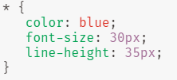
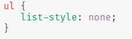
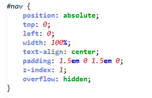
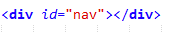
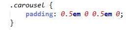
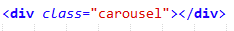
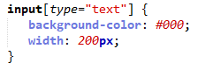
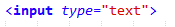
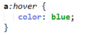

Midterms
Web Systems and Technologies Reviewer 2018
- Cascading Style Sheets
-
Cascading Style Sheets (CSS) is a language that is used to format or describes the presentation of webpages (including fonts, colors, etc.) of structurally markup documents like XML, SVG, etc. It helps web developers to define a particular style only once. It makes the website more pleasing to the eye and also gives us proper control on how web pages will look over HTML.
The term , "Cascading" is derived by applying multiple style sheets on the same webpage/s.
- Cascading Style Sheets is invented by Håkon Wium Lie
 and
Bert Bos
and
Bert Bos

- Cascading Style Sheets is invented by Håkon Wium Lie
- CSS Version History
-
CSS Version History
- CSS Level 1
- CSS Level 2
- CSS Level 2 Revision 1
- CSS Level 3
- - CSS Level 1 become an offical W3C Recommendation on December 17, 1996. The developers of CSS are Håkon Wium Lie and Bert Boss.
- - The oiginal working draft was created on Novemnber 23, 1995. It was revised after 12 years on April 11, 2008.
- - This kind of version doesn't already maintains the recommendation of CSS 1 anymore.
- - This version support the colors and backgrounds of your webpage, padding and border of each elements such as padding-bottom, padding-left, etc. The font properties such as font-family, font-size, etc.
- - CSS Level 2 becomes a W3C Recommendation on May 1998.
- - CSS Level 2 needed 9 years (August 2002 - June 2011) to reach the recommendation status because there were some secondary features that needed to be held.
- - It has added some new capabilities like the positioning of texts and elements like the z-index. The Z index is a stack order of specific elements.
- - This version of CSS also separates the presentatiion style to the content of the documents itself.
- - CSS 2.1 becomes a W3C Recommendation after 13 years on June 7, 2011.
- - CSS 2.1 removes some bad and non consitent features on CSS 2.
- - This version also represent a snapshot of the following CSS Usage and altered some of the parts that are in CSS 2.
(CSS Selectors Level 3, January 2018)
- - CSS 3 becomes a candidate recommendation on January 30, 2018.
- - In CSS 3, the documents are divided and separated called "modules" by preserving "backward compatibility". The first draft of CSS 3 were published on June 1999.
- - This version has already published over 50 modules by the CSS Working Group.
- CSS Selector
-
A CSS selectors are patterns that is used to select the element(s) or content you want to style.
- Selectors
- Selector Syntax
- Selectors Group
- Combinators
- pseudo-elements
- - Structure used us a condition in a css rule to determine which elements in the document tree are matched.
- - body ail# x>p-y[title] + span: +-before
- - condition in a CSS rule
- - match elements called the subject of the selector
- - one or more sequences of simple selector
- - example:
body(simple) p.xyz (selector sequence) + h1[title]::before (pseudo element)
- - h1, h2, h3
- - :link; :visited
- - ul, hl, p
- - > child combinators
- - ~ general sibling
- - + adjacent sibling
- - ::first-line, :first-line
- - ::first-letter, :first-letter(eg h1::first-letter{font size: 2em;}
- - ::before, :before – introduce content before (eg h1::before{content:”topic”;}
- - ::after, :after – introduce content after element
- Simple Selectors
-
6 types of Simple Selectors.
- Universal Selectors
- Type Selectors
- ID Selectors
- Class Selectors
- Attribute Selectors
- Pseudo-classes
- - The universal selector works like a wild card character, selecting all elements on a page. Every HTML page is built on content placed within HTML tags. Each set of tags represents an element on the page.
- Example of CSS which uses the universal selector:
 - The three lines of code inside the curly braces (color, font-size, and line-height) will apply to all elements on the HTML page.
- - Also referred to simply as a “type selector,” this selector must match one or more HTML elements of the same name. Thus, a selector of nav would match all HTML nav elements, and a selector of < ul > would match all HTML unordered lists, or < ul > elements.
- Example uses an element type selector to match all < ul > elements:

- - An ID selector is declared using a hash, or pound symbol (#) preceding a string of characters. The string of characters is defined by the developer. This selector matches any HTML element that has an ID attribute with the same value as that of the selector, but minus the hash symbol.
- Example of id selector
 - This CSS uses an ID selector to match an HTML element such as:

- - The class selector is the most useful of all CSS selectors. It’s declared with a dot preceding a string of one or more characters.
- Example of Class Selector
 - These styles will apply to the following HTML element:

- - The attribute selector targets elements based on the presence and/or value of HTML attributes, and is declared using square brackets:
- Example
 - - There should not be a space before the opening square bracket unless you intend to use it along with a descendant combinator. The above CSS would match the following element:

- - A pseudo-class uses a colon character to identify a pseudo-state that an element might be in—for example, the state of being hovered, or the state of being activated. Let’s look at a common example:
 - - the pseudo-class portion of the selector is the :hover part. Here we’ve attached this pseudo-class to all anchor elements ( elements). This means that when the user hovers their mouse over an element, the color property for that element will change to red.
- CSS Rule Precedence
-
- - An HTML element may be the subject of the selectors of multiple style rules.
- - When such rules target different properties, their effect cascade.
- - When the style involve the same property, they conflict and must be resolved such that only one style is applied.
- By Origin and Importance
- By Specificity
- By Order
- - The origin of the rule declared refers to where it comes from. There are three potential origins for a rule(useragent,author,user).
- - The importance of the rule is whether it has been specified as important or normal. By default, all rules are considered normal until we specify them to be important.
- - A rule can be marked as important by using the !important rule.
- - Determined by the number of #id, selected classes, type, pseudo-element, attribute.
- - The last/later part will be followed.
- CSS Declaration
-
- Properties
- Short hand Properties lets you see or specify the set of values of multiple properties at the same time.
- Examples: background, margin, padding, border
Vendor specific extensions (vendor prefixes) - it is an identifier that are used by browser vendors as a prefix for the names of experimental and non - standard properties. It begins with a dash (-) or a underscore (-).
- Examples: -webkit-border-radius, moz-border-radius, -moz, -ms-, mso-, -webkit-
Custom Properties (CSS Variables) - the property names are prefixed with --, that represent a value that can be reused throughout the document and can be accessed by using the the var() function.
- Example: color: var(--main-color);
- CSS Value Processing
-
- Once a user agent has parsed a document, it must assign to every element of the tree.
- Declared Values
- Cascaded Values
- Specified Values
- Computed Values
- Used Values
- Actual Values
- - Each declaration contributes for a declared values that is associated with the element.
- - It represents the result of the cascade.
- - It is the value of a property that the authors intended for that specific element.
- - It is the value that is transferred from parent to child during inheritance and it is the act of resolving the specified values.
- - It completes the remaining calculations of the computed values to make it an absolute theoretical value.
- - The actual values is a principle that is ready to be used in a given environment.
- CSS Value Types
-
- These are the two types of keywords in CSS
- CSS-wide Keywords
- Property-Specific Keywords
- - It represents the value computation to all CSS properties that follows but they are not a valid custom-ident/s.
- - Examples of CSS-wide keywords: initial', 'inherit', 'unset'.
- - The numeric data types are the Integers, Real Numbers, and with a percantage type.
- - An integer is one or more decimal digits from 0 to 9.
- - A number is either an integer (usually preceeded by a '-' or '+'), zero or a decimal digits (.)
- - A percentage is followed by a percent sign (%), and it can be combined with a 'calc()' expression. The examples are: '< length-percentage >', '< frequency-percentage >', etc.
- CSS Numeric Data Type: Dimensions
-
- The general term of dimension refres to a particular number with a unit that is attached to it. It is an indentifier when it is written literally that is followed by a unit indentifier. In CSS, < dimension>s are used to specify distances, durations, frequencies, resolutions, etc.
- Length Units
- Angle Units
- Duration (Time) Units
- Frequency Units
- Resolution Units
- a. Font-relative Length Units - refer to the font metrics of the element.
- Examples of Font-relative lengths: 'em', 'ex', 'rem', 'ch'.
- b. Viewport-percentage Lengths - it is a relative to the size of initial containing block. When the block is changed, the height and width are scaled accordingly.
- Examples of Viewport-percentage lengths: 'vw', 'vh', 'vmin', 'vmax'.
- c. Absolute Length Units - they are fixed in relation and it is anchored into some measurements like inches, centimeters, etc.
- -- 2 types of Absolute Units: --
- Physical Units: 'in', 'cm', 'mm', 'pt', 'pc', 'q'
- Visual Angle Units: 'px'
- - It is used in gradients and transform functions.
- Examples of Angle Units: 'deg', 'grad, 'rad', 'turn'
- - It is used in animation, transition, and other related functions.
- Examples of Duration (Time) lengths: 's', 'ms'
- - It is used to represent a dimension such as the pitch of a speaking voice but it is not currently not being used or it is obselete.
- Examples of Frequency Identifiers: 'Hz (Hertz)', 'kHz (KiloHertz)'.
- - It represents the size of a single dot in a graphical representation and how many does the following dots fits in CSS.
- Examples of Resolution Unit Identifiers: 'dpi', 'dpcm', 'dppx'.
- Other Data Types in CSS
-
- Some data types are defined in their own modules. This are the most common examples:
- Colors
- Images
- 2D & 3D Positioning
- The < color > data type is defined in CSS Color Module Level 3. This is a W3C Proposed Recommendation in March 15, 2018. The list of basic color keywords are black, blue, red, aquam fuschia, navy, and etc.
- The < image > data type is defined as a candidate recommendation on April 17, 2012. It can be used for background images, cursor properties.
- The < position > value specifies the position of an object, whether it is in 2D or 3D. The canonical order is the horizantal component followed by a vertical component.
- CSS Preprocessors, Frameworks and Polyfills
-
- It generates CSS using a customize language syntax that includes features that are not available in pure CSS like variables, nestings, mixins, etc. It is more easier to maintain than any other features.
- Preprocessors
- Frameworks
- Polyfills
- - Generates CSS using custom language syntax that typically include features that don't exist in pure CSS.
- Examples of CSS Preprocessors:
- a. SASS (Syntactically Awesome Style Sheets) - is a scripting language that is compiled in the CSS itself. It has a script that is called "SassScript".
- b. LESS (Leaner Style Sheets) - ackwards-compatible language extension for CSS.
- c. STYLUS - dynamic stylesheet preprocessor language that is compiled into CSS.
- - Provided predefined CSS design functionality that can be reused,extended, or customized.
- - e.g. Bootstrap, Foundation, Materialize,etc..
- - Also known as "Shims".
- - Provides features that developers expect browsers to provide natively.
- - e.g. Modemizr, Selectivizr,etc.
- Javascript
-
- - Developed circa 1995 by Brendan Eich at Netscape Communications as the scripting language for the Netscape Navigator Browser
- - Formerly called Mocha, then LiveScript, then JavaScript
- - Standardized by ECMA International as ECMAScript
- - Latest version: JavaScipt 1.8.1, ECMAScript 5 [ECMA-262 5th Edition]
- - Common version: JavaScript 1.5, Jscript 5.5, ECMAScript v3 [ECMA-262 3rd Edition]
- - JavaScript Frameworks:
- - script.aculo.us, jQuery, MooTools, Prototype, Dojo Toolkit, etc.
- - Linked/Embedded in web pages using the
 element
element
-
- - Linked:

- - Embedded (either in the
 or the
or the  element)
element)

- - Linked:
- - JavaScript + DOM/BOM + CSS + (X)HTML = DHTML
- - JavaScript code in (X)HTML pages can be executed “on the fly” as the document is rendered (i.e. code outside of functions executes as the element is encountered); in most cases though, JavaScript code is executed in response to document events (e.g. clicking a page element).
- JavaScript Language Fundamentals
-
- JavaScript is an object-oriented computer programming language commonly used to create interactive effects within web browsers.
- Variables and Constants
- Array
- Primitive data Type
- var globalVar; //global scope(becomes property of the window object)
- let someVar; //global scope(does not become property of the window object)
- const Legal_age=22; //global constant(does not become property of the Window Object)
- avoid This=100; //reference to Window Property(created implicitly)
- let blockVar; //block local scope
- Array Property:
- - constructor -returns the function that created the Array object's prototype.
- - length -sets or returns the number of elements in an array.
- - prototype -allows you to add properties and methods to an Array object
- Numbers:
- - Number JavaScript object is a wrapper object allowing you to work with numerical values. A Number object is created using the Number() constructor.
- Example of Number Properties:
- - Number.Nan -Special "not a number" value.
- - Number.NEGATIVE_INFINITY -Special value representing negative infinity; returned on overflow.
- - Number.POSITIVE_INFINITY -Special value representing infinity; returned on overflow.
- - Number.prototype -Allows the addition of properties to a Number object.
- string:
- var school= 'SLU\nSCIS'; // single quote delimiter
- var dept= "IT/CS"; // double quote delimiter
- boolean:
- 0, '', false, null and undefined are "falsy" values.
- all other values are "truthy" values
- JavaScript Event Handling
-
- JavaScript is an object-oriented computer programming language commonly used to create interactive effects within web browsers.
- Event Propagation order
- Method
- Event Object Properties and Methods
- - Capturing phase – the event goes down to the element.
- - Target phase – the event reached the target element.
- - Bubbling phase – the event bubbles up from the element.
- Method #1 (inline HTML event attribute):
- - non-standard universal support, not recommended.
- Method #2 (pre-DOM L2):
- - Non-standard universal support.
- - can register only one handler.
- - remove handler by assigning null values to attribute.
- Method #3 (DOM L2 event registration):
- - standard, well-supported.
- - can rgister more than one event handler.
- - can register handlers on the bubble or capture phase.
- Method #4 (Microsoft-specific, non-standard, IEvG-v10):
- - can register more than one event handler.
- - can register handlers on the bubble phase.
- - use detachEvent() to remove event handler.
- - use fireEvent() to trigger event programmatically.
- - cross-browser event registration.
- - bubbles -boolean values
- - event phase
- - target -trigger the event
- - Current Target -handles the event
- - prevent Default()
- - stop Propagation()
- - stopImmediate Propagation()
- - other event
- © All rights Reserved, Webteklec 2018